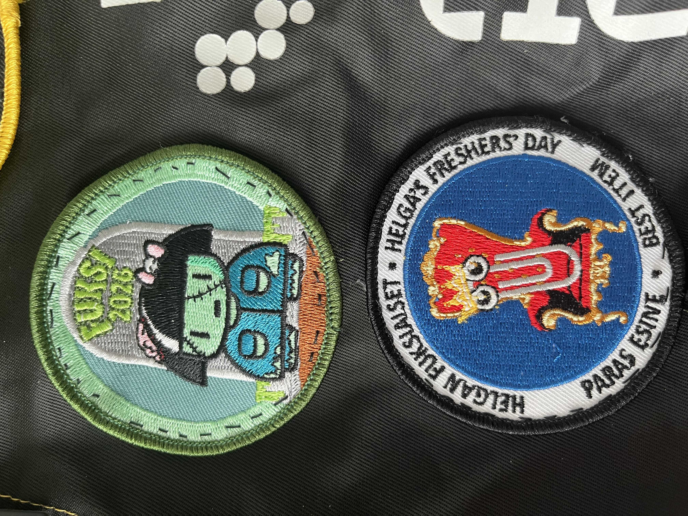

Helgan Fuksiaiset
Fuksiaiset on uusille opiskelijoille järjestettävä rastikierros, jolla on usein myös opiskelijoiden toiveesta jatkot. Fuksiaiset alkavat usein lounaan jälkeen, jonka johdosta usein joko koko päivän tai iltapäivän opetus on peruttu. Fuksiaiset järjestetään Helsingin keskustassa ja Haagan, Malmin ja Pasilan kampuksilla opiskelevat kulkevat fuksiaisiin omatoimisesti. Porvoon opiskelijoille järjestetään bussikuljetukset Helsinkiin ja takaisin. Vierumäen kampuksella on tavattu pitää omat fuksiaiset.
Rastikierros kierretään omassa luokkaryhmässä tutoreiden avustuksella ja rastikarttaa käyttäen. Rasteja on yleensä noin 27 ja niitä on pitämässä Helgan lisäksi erilaiset yhteistyökumppanit sekä Haaga-Helian yhdistykset. Rasteilla suoritetaan erilaisia ryhmäyttäviä ja hauskoja tehtäviä, joista saa pisteitä. Tavallisilta rasteilta on mahdollista saada 0-100 pistettä ja Helgan rastilta 0-200 pistettä. Pisteiden määräytymisessä ei välttämättä ole aina logiikkaa, mutta rastinpitäjiä on ohjeistettu pisteyttämään hyvää ryhmähenkeä huokuvat opiskelijaryhmät antoisasti. Myös teemaan kuuluva ryhmähuuto tai -laulu voi auttaa saamaan lisäpisteitä rasteilta.
Fuksiaisilla on aina jokin teema, jonka mukaan opiskelijoita kannustetaan pukeutumaan. Pukukoodiksi suosittelemme opiskelijahaalareita + teemapukeutumista! Kaikki fuksiaisiin osallistuvat ryhmät ovat myös automaattisesti mukana kilpailussa, jossa palkitaan ryhmät joilla on ollut rastikierroksen parhaat pisteet, paras pukeutuminen ja paras ryhmähenki. Parhaat pisteet lasketaan palautettujen pistekorttien perusteella ja paras pukeutuminen sekä ryhmähenki arvioidaan yhdessä rastinpitäjien ja järjestäjien kanssa.
Tämän vuoden teemana oli zombit kuten merkkistä näkee. Fuksiaisissa oli myös esineen vaihto kilpailu, jonka oma ryhmäni voitti vaihdettuaan klemmarin pesukoneeseen.
